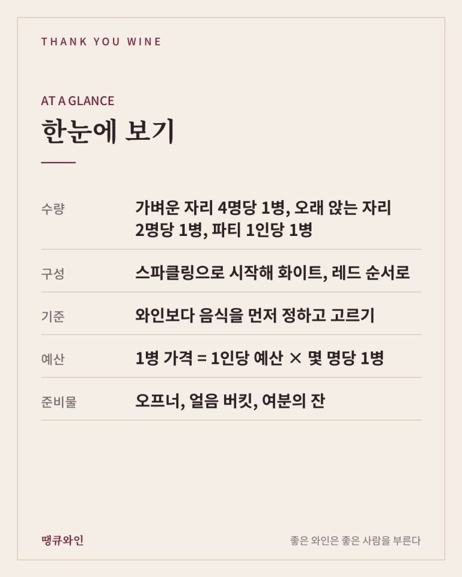
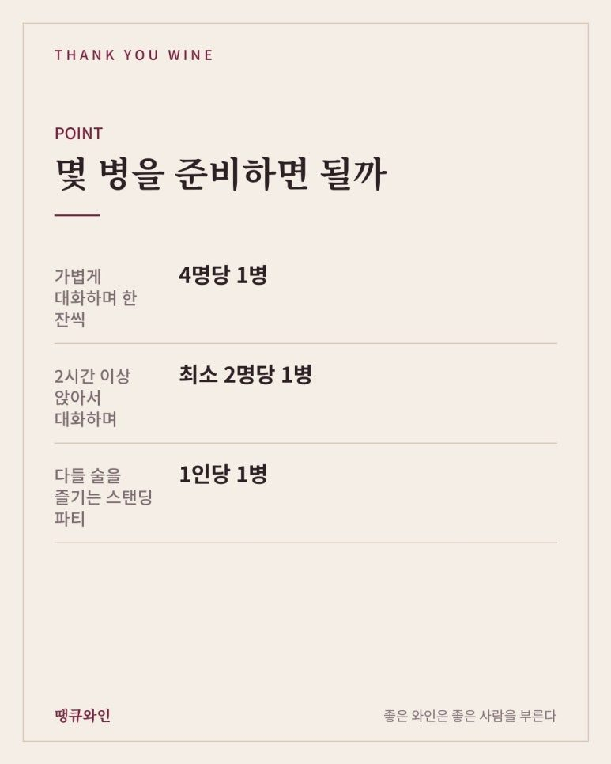
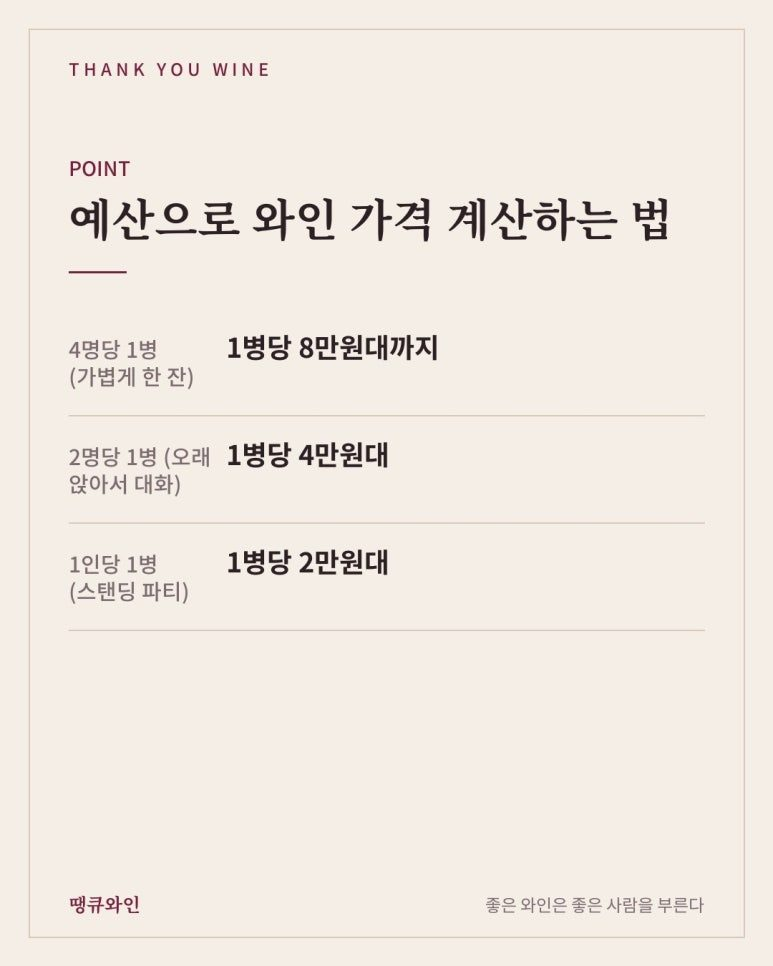
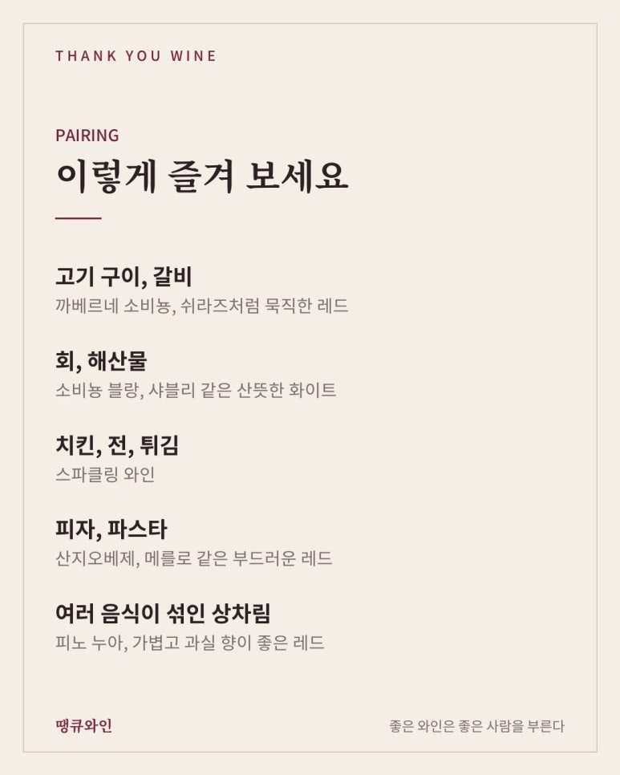
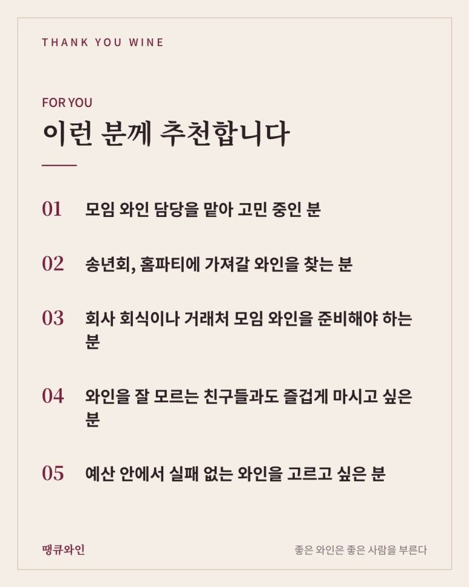

모임 와인 고르는 법
몇 병? 어떤 순서로? 송년회·홈파티 와인 실패 없이 고르기
모임 와인은 가벼운 자리 4명당 1병, 오래 앉는 자리 2명당 1병, 파티라면 1인당 1병을 기준으로 잡고, 스파클링으로 시작해 화이트, 레드 순서로 구성하면 실패가 적어요. 와인보다 음식을 먼저 정하고, 1병 가격은 1인당 예산에 몇 명당 1병인지를 곱해 계산해요.
“이번 모임 와인은 네가 좀 골라 와.”
와인을 조금 안다는 이유로 이런 부탁을 받으면, 은근히 고민이 많아집니다.
몇 병을 사야 할지, 레드를 살지 화이트를 살지, 가격은 어느 정도가 적당할지 막막하죠.
특히 연말 송년회와 홈파티가 몰리는 시즌이 다가오면 이 고민은 더 자주 찾아옵니다.
오늘은 모임 와인을 실패 없이 고르는 방법을 인원수, 순서, 음식, 예산별로 정리해 보았습니다.

한눈에 보는 모임 와인 고르는 법
- 수량: 가벼운 자리 4명당 1병, 오래 앉는 자리 2명당 1병, 파티 1인당 1병
- 구성: 스파클링으로 시작해 화이트, 레드 순서로
- 기준: 와인보다 음식을 먼저 정하고 고르기
- 예산: 1병 가격 = 1인당 예산 × 몇 명당 1병
- 준비물: 오프너, 얼음 버킷, 여분의 잔

몇 병을 준비하면 될까?
모임 와인을 준비할 때 가장 많이 하는 고민이 바로 “몇 병을 사야 할까?”입니다.
정답부터 말씀드리면, 모임의 성격과 분위기에 따라 꽤 많이 달라집니다.
와인 1병(750ml)은 잔으로 약 6잔 정도가 나오는데요.
와인만 마시는 모임을 기준으로, 땡큐와인에서는 이렇게 추천드립니다.
- 가볍게 대화하며 한 잔씩: 4명당 1병
• 2시간 이상 앉아서 대화하며 마시는 자리: 최소 2명당 1병
- 다들 술을 즐기는 스탠딩 파티: 1인당 1병

2명당 1병도 분위기가 무르익으면 모자랄 수 있어서, 오래 앉아 있는 자리라면 한두 병 여유 있게 준비하시는 것이 좋습니다.
물론 와인 말고 맥주나 소주 같은 다른 술이 함께 있는지, 참석하는 분들이 주로 어떤 술을 좋아하는지에 따라서도 달라집니다.
1인당 1병이면 넉넉할까?
많이 마실 때는 두 사람이 3병을 비우기도 하지만, 의외로 여러 명이 모인 단체 자리에서는 오히려 덜 마시는 경우가 많습니다.
대화하고, 사진 찍고, 음식 먹고, 자리를 옮겨 다니다 보면 생각보다 잔이 천천히 비거든요.
그래서 단체 모임에서 1인당 1병을 잡으면 꽤 넉넉하다고 보셔도 됩니다.
피자를 주문할 때를 떠올려 보면 쉬운데요.
다른 음식이 함께 있으면 1인 1조각을 기준으로 주문하지만, 피자만 먹는다면 1인당 2조각으로 계산하잖아요.
와인도 마찬가지입니다.
사람마다 마시는 양이 다르고 그날 분위기에 따라 달라지니 정확히 맞히기는 어렵지만, 이렇게 모임 성격에 맞는 기준을 하나 정해 두면 적당한 양을 가늠할 수 있습니다.
예산으로 와인 가격 계산하는 법
몇 명당 1병을 준비할지 정했다면, 와인 1병의 가격대도 자연스럽게 계산됩니다.
1병 가격 = 1인당 와인 예산 × 몇 명당 1병
예를 들어 1인당 와인 예산이 2만원대이라면 이렇게 됩니다.
• 4명당 1병 (가볍게 한 잔): 1병당 8만원대까지
• 2명당 1병 (오래 앉아서 대화): 1병당 4만원대
• 1인당 1병 (스탠딩 파티): 1병당 2만원대
가볍게 한 잔씩 하는 자리라면 조금 좋은 와인 한 병으로 분위기를 내고, 오래 마시는 자리라면 무난한 와인을 여러 병 준비하는 식이죠.
남은 와인은 마개를 막아 냉장 보관하면 2~3일은 충분히 즐길 수 있으니, 부족한 것보다 조금 넉넉한 편이 좋습니다.
어떤 순서로 마시면 좋을까?
모임 와인은 가벼운 와인에서 무거운 와인 순서로 여는 것이 기본입니다.
• 시작: 스파클링 와인으로 건배
• 식사 초반: 화이트 와인과 가벼운 음식
• 메인 요리: 레드 와인
• 마무리: 디저트와 스위트 와인
무거운 레드를 먼저 마시면 그 뒤에 마시는 가벼운 와인의 맛이 잘 느껴지지 않기 때문입니다.
모든 종류를 다 준비할 필요는 없고, 스파클링 1병 + 레드 1~2병 정도만 있어도 충분히 모임 분위기를 낼 수 있어요.

음식에 따라 어떻게 고를까?
와인을 고르기 전에 어떤 음식을 먹을지를 먼저 정하면 훨씬 쉬워집니다.
- 고기 구이, 갈비: 까베르네 소비뇽, 쉬라즈처럼 묵직한 레드
- 회, 해산물: 소비뇽 블랑, 샤블리 같은 산뜻한 화이트
- 치킨, 전, 튀김: 스파클링 와인
- 피자, 파스타: 산지오베제, 메를로 같은 부드러운 레드
- 여러 음식이 섞인 상차림: 피노 누아, 가볍고 과실 향이 좋은 레드

메뉴가 정해지지 않았거나 음식이 다양하다면, 스파클링 와인이 가장 안전한 선택입니다.
산미와 기포가 기름진 음식, 짭짤한 음식, 매운 음식까지 두루 잘 받아주거든요.
누구와 마시는지에 따라 어떻게 고를까?
같은 와인이라도 함께 마시는 사람에 따라 반응이 달라집니다.
- 와인을 잘 모르는 분이 많을 때: 떫지 않고 과실 향이 풍부한 와인
- 와인 애호가가 많을 때: 산지나 생산자 이야기가 있는 와인
- 회사 회식이나 거래처 모임: 이름이 알려진 산지의 무난한 와인
- 술을 잘 못 마시는 분이 있을 때: 논알콜 와인이나 도수가 낮은 스파클링
모두가 처음 마셔보는 낯선 와인 한 병과, 누구나 편하게 마실 수 있는 와인 한 병을 섞어서 준비하면 대화거리도 생기고 실패할 확률도 줄어듭니다.
건배용 스파클링은 꼭 넣어 보세요
예산이 넉넉하지 않더라도 건배용 스파클링 한 병은 꼭 넣어 보시는 것을 추천드립니다.
코르크를 여는 순간 분위기가 확 살아나서, 와인 몇 병보다 큰 역할을 하기도 합니다.
특별한 날이라면 메인 와인 한 병만 좋은 와인으로 고르고, 나머지는 무난한 와인으로 채우는 것도 좋은 방법입니다.
모임 전에 챙기면 좋은 준비물
와인만큼 중요한 것이 준비물입니다.
- 와인 오프너: 스크류캡이 아닌 와인이라면 꼭 확인
- 얼음 버킷: 화이트와 스파클링을 차갑게 유지
- 와인 잔: 인원수보다 2~3개 넉넉하게
- 물: 와인 사이사이 마실 물
식당에서 모임을 한다면 콜키지(와인 반입) 가능 여부와 비용도 미리 확인해 두시는 것이 좋습니다.
모임 와인, 이런 분께 추천합니다
- 모임 와인 담당을 맡아 고민 중인 분
- 송년회, 홈파티에 가져갈 와인을 찾는 분
- 회사 회식이나 거래처 모임 와인을 준비해야 하는 분
- 와인을 잘 모르는 친구들과도 즐겁게 마시고 싶은 분
- 예산 안에서 실패 없는 와인을 고르고 싶은 분

자주 묻는 질문
Q. 와인을 남기면 어떡하죠?
A. 마개를 막아 냉장 보관하면 2~3일은 충분히 즐길 수 있습니다. 스파클링은 전용 마개를 쓰면 기포를 더 오래 지킬 수 있어요.
Q. 레드와 화이트 중 하나만 고른다면 무엇이 좋을까요?
A. 음식이 다양하다면 가벼운 레드나 스파클링이 무난합니다. 고기 위주라면 레드, 해산물 위주라면 화이트를 추천드립니다.
Q. 가격이 비쌀수록 모임 반응이 좋을까요?
A. 꼭 그렇지는 않습니다. 함께 마시는 사람의 취향과 음식에 맞는 와인이 훨씬 좋은 반응을 얻습니다.
결국 모임 와인의 핵심은 ‘함께 마시는 사람’입니다
좋은 모임 와인은 가장 비싼 와인이 아니라, 그 자리에 있는 사람들이 모두 편하게 즐길 수 있는 와인입니다.
인원수, 음식, 예산만 알려주시면 땡큐와인에서 모임에 딱 맞는 와인을 함께 골라드리겠습니다.
이 글은 땡큐와인 네이버 블로그에 먼저 올린 글이에요.